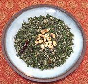

|
Long Beans with CoconutIndia - Kerala / Tamil Nadu - Achinga Payar Thoran (Karala) / Karamani Poriyal (Tamil Nadu) | ||||
| Serves: Effort: Sched: DoAhead: |
4 side *** 50 min Yes |
A tasty side dish, but too light for a main dish. Thorans (Malayalam) or Poriyal (Tamil) are served as side dishes, along with rice and a curry or similar main dish. | |||
|
1 ------- 3 2 1 1-1/2 ------- 1 1 1 1 10 ------- 2 1/3 1 |
# --- T oz T --- t t t --- t c t |
Cabbage, white -- Paste Coconut, grated (1) Shallots Green Chili (2) Water -- Tempering Mustard Seeds (3) Cumin Seeds Urad Dal (4) Chili red dry Curry Leaves (5) -------------- Coconut Oil Water Salt |
Prep: - (25 min)
|
isv_lbncoc1 211122 ssp47 & var -
www.clovegarden.com
©Andrew Grygus - agryg@aaxnet.com - Linking to and
non-commercial use of this page is permitted.